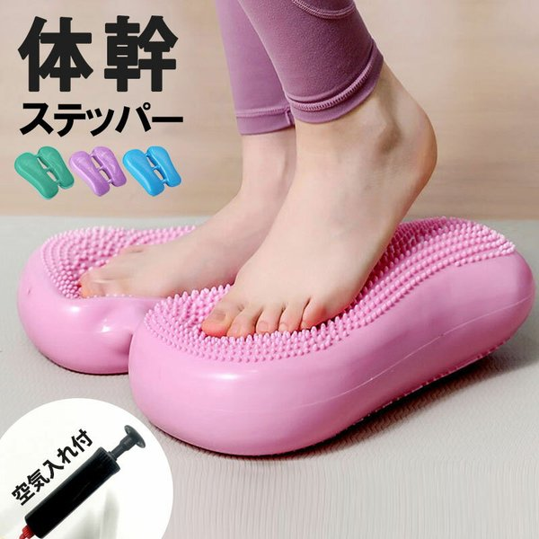
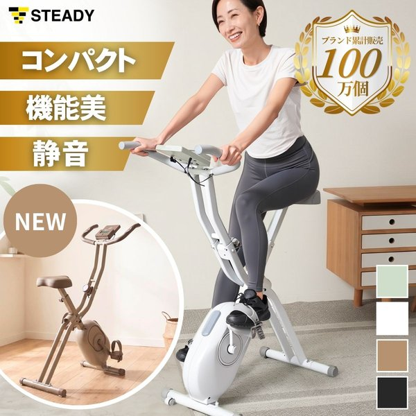
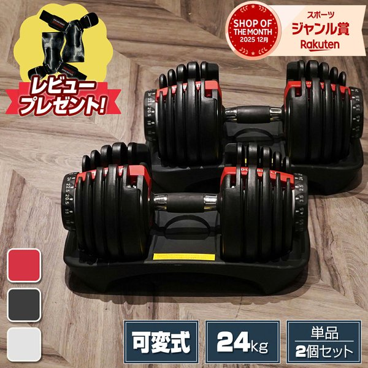
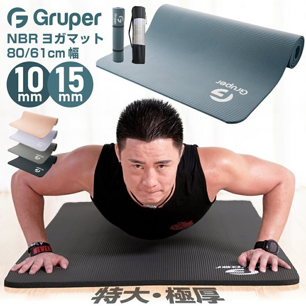
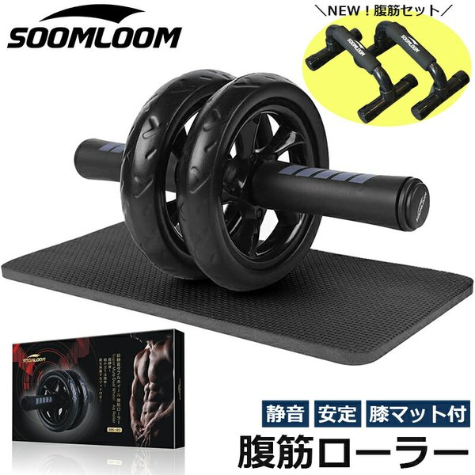
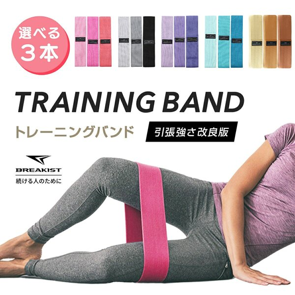
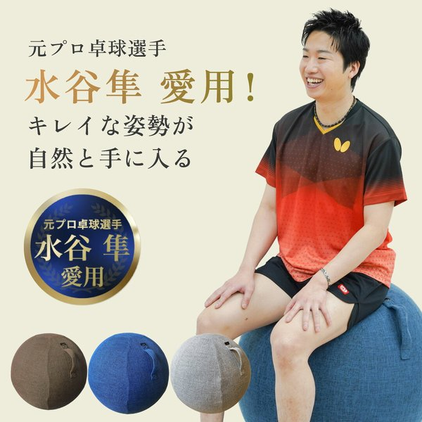
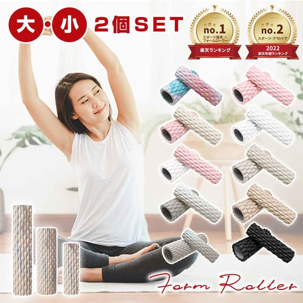
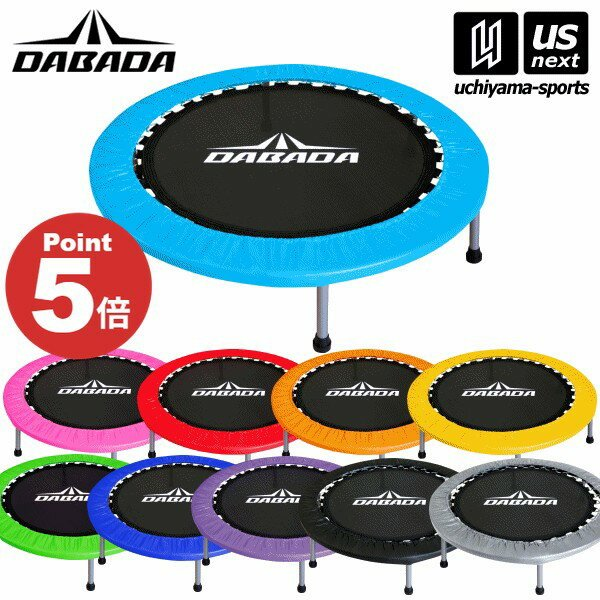
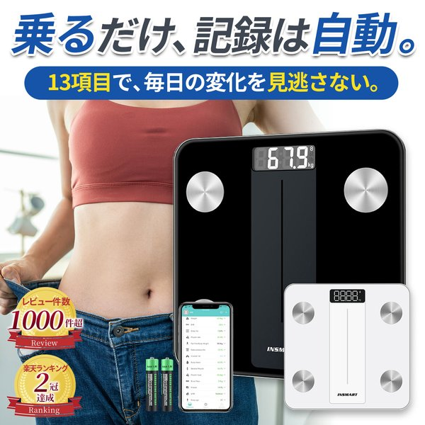

【2026年冬】寒くて外に出たくない日に！自宅で続く宅トレ器具＆ダイエットフィットネスグッズおすすめ10選
冬は外を走る習慣が途切れやすい季節です。日が暮れるのが早く、朝は路面が冷えている。ジムに通うにも着替えて出るまでの手間がかかるので、運動そのものより「始めるまでの段取り」で止まりがちです。
そこで効くのが、部屋の中で完結する器具です。選ぶ軸は3つ。まず音で、集合住宅なら踏む・回す・跳ねる音がどこまで出るかを確認します。次に置き場所で、畳めるか、使わないときに物陰に寄せられるか。最後に1回の運動時間で、10分で切り上げられる器具のほうが結果的に続きます。ダンベルやバンドは、重さを何段階変えられるかで長く使えるかが決まります。
本記事では、楽天市場で人気・高評価の宅トレ器具＆ダイエットフィットネスグッズ10選を、実売価格とレビュー評価つきで写真付き紹介します。
- おすすめ10選 スペック・特徴比較表
- BEST 1｜エアステッパー 体幹ステッパー（空気入れ付き・ピンク）
- BEST 2｜コンパクトフィットネスバイク 静音・折りたたみ（負荷16段階）
- BEST 3｜可変式ダンベル 24kg（プレート差し替え式・単品／2個セット）
- BEST 4｜ヨガマット 厚手15mm／10mm（幅80・61cm・4サイズ）
- BEST 5｜腹筋ローラー アブローラー（膝マット付き・静音）
- BEST 6｜トレーニングバンド 3本セット（布製・強度別）
- BEST 7｜バランスボール 55／65cm（ファブリックカバー付き）
- BEST 8｜フォームローラー 大小2個セット（筋膜リリース・ヨガポール）
- BEST 9｜折り畳みミニトランポリン（フィットネス用・6色）
- BEST 10｜体組成計 デジタル260H（スマホ連動・13項目）
- 【読者負担0円】買わなくても得する無料サービス
- まとめ：宅トレ器具10選の選び方
| 順位 | 商品名 | ブランド | 最大の特徴・おすすめ理由 | 総合評価 |
|---|---|---|---|---|
| BEST 1 | エアステッパー 体幹ステッパー（空気入れ付き・ピンク） | 体幹ステッパー専門店 | 空気圧式で着地の衝撃と音が少ない | 4.35 |
| BEST 2 | コンパクトフィットネスバイク 静音・折りたたみ（負荷16段階） | STEADY（ステディ） | 折りたたみで使わないときは畳める | 4.37 |
| BEST 3 | 可変式ダンベル 24kg（プレート差し替え式・単品／2個セット） | FITMATE | 1台で24kgまで対応 | 4.70 |
| BEST 4 | ヨガマット 厚手15mm／10mm（幅80・61cm・4サイズ） | Gruper | 15mmの厚みで床の硬さを感じにくい | 4.54 |
| BEST 5 | 腹筋ローラー アブローラー（膝マット付き・静音） | SOOMLOOM | 膝マット付きで床に優しい | 4.59 |
| BEST 6 | トレーニングバンド 3本セット（布製・強度別） | BREEDEST | 強度別3本で使い分けられる | 4.63 |
| BEST 7 | バランスボール 55／65cm（ファブリックカバー付き） | uFit | 布カバー付きで部屋になじむ | 4.38 |
| BEST 8 | フォームローラー 大小2個セット（筋膜リリース・ヨガポール） | LIFEBEA | 大小2本で使う場所を分けられる | 4.60 |
| BEST 9 | 折り畳みミニトランポリン（フィットネス用・6色） | DABADA（ダバダ） | 脚を折りたたんで収納できる | 4.72 |
| BEST 10 | 体組成計 デジタル260H（スマホ連動・13項目） | インスマート | 乗るだけでアプリに自動記録 | 4.49 |
エアステッパー 体幹ステッパー（空気入れ付き・ピンク）

空気圧で踏み込むタイプのミニステッパー。硬い踏み台と違い、沈み込みで衝撃を吸収するので、マンションの部屋でも足音が出にくいのが利点です。座ったまま足を乗せて使うこともでき、テレビを見ながらでも踏み続けられます。付属の空気入れで硬さを自分好みに調整できます。楽天市場での実売価格は約2,070円（2026年11月時点）。
- 空気圧式で着地の衝撃と音が少ない
- 座ったままでも使える
- 2,000円台で始められる
- 空気の入れ具合で踏み心地が変わるので、最初に硬さを調整する
コンパクトフィットネスバイク 静音・折りたたみ（負荷16段階）

折りたたんで収納できるコンパクトなルームバイク。非接触式のホイールを採用し、ペダルを回しても駆動音が出にくい設計です。負荷は16段階で、軽いウォーミングアップから立ちこぎに近い負荷まで調整できます。ハンドルにはスマホやタブレットを置ける台が付き、動画を見ながら有酸素運動を続けられます。楽天市場での実売価格は約19,990円（2026年11月時点）。
- 折りたたみで使わないときは畳める
- 静音設計で集合住宅でも使いやすい
- 負荷16段階で初心者から使える
- 本体20kg前後あるため、毎回の出し入れは負担になる
可変式ダンベル 24kg（プレート差し替え式・単品／2個セット）

ダイヤルやピンで重さを切り替えるタイプではなく、プレートを差し替えて24kgまで調整する可変式ダンベル。1台で軽い負荷から高重量までカバーできるので、器具を何種類も揃えずに済みます。単品と2個セットが選べ、まず片方から始めて後から揃えることもできます。楽天市場での実売価格は約8,980円（2026年11月時点）。
- 1台で24kgまで対応
- 単品・2個セットを選べる
- レビュー2,900件超・評価4.70
- プレートの差し替えに少し手間がかかる
ヨガマット 厚手15mm／10mm（幅80・61cm・4サイズ）

NBR素材の厚手ヨガマット。15mmの厚みがあるので、床に寝転がる筋トレやストレッチでも背中や膝が痛くなりにくいのが利点です。幅は80cmと61cm、長さ183cmで、体格や種目に合わせて4サイズから選べます。防災用のマットとしても使える厚みです。楽天市場での実売価格は約2,280円（2026年11月時点）。
- 15mmの厚みで床の硬さを感じにくい
- 幅80cmのゆったりサイズがある
- レビュー4,100件超・評価4.54
- 厚手のぶん重く、丸めても場所を取る
腹筋ローラー アブローラー（膝マット付き・静音）

膝を床に着けて転がす腹筋ローラー。前に転がして戻る動きで腹筋全体に負荷がかかり、数回でも効いている感覚が出ます。膝マットが付属するので、硬い床でも膝を痛めにくいのが利点です。折り返しの負荷が強いので、最初は壁で止まる位置から始めると安全です。楽天市場での実売価格は約1,350円（2026年11月時点）。
- 膝マット付きで床に優しい
- 静音設計で集合住宅でも使える
- レビュー4,500件超・評価4.59
- 戻す動きが重く、初心者は腰を反りやすいので注意
トレーニングバンド 3本セット（布製・強度別）

布製のトレーニングバンドを強度別に3本まとめたセット。ゴム製のチューブと違い、肌に食い込みにくく、太ももやヒップに巻いて使う下半身トレーニングに向いています。色ごとに負荷が違うので、種目や体力に合わせて使い分けられます。1,690円と、ジムに通う前に自宅で試したい人に向く価格です。楽天市場での実売価格は約1,690円（2026年11月時点）。
- 強度別3本で使い分けられる
- 布製で肌に食い込みにくい
- 1,700円以下で揃う
- 高負荷の種目には伸びが足りなくなる
バランスボール 55／65cm（ファブリックカバー付き）

布製カバーをかぶせたバランスボール。塩ビむき出しのボールと違い、リビングに置いても生活感が出にくく、カバーは洗濯できます。空気を入れすぎなければ椅子代わりに座って体幹を保つ使い方もでき、55cmと65cmから身長に合わせて選べます。パンクに強いアンチバースト仕様です。楽天市場での実売価格は約5,980円（2026年11月時点）。
- 布カバー付きで部屋になじむ
- カバーを洗濯できる
- 椅子代わりにも使える
- 空気の量の調整が硬さと座り心地を左右する
フォームローラー 大小2個セット（筋膜リリース・ヨガポール）

硬さの違う大小2本のフォームローラーをまとめたセット。大きい方は背中や太ももなど広い面に、小さい方はふくらはぎや肩まわりなど狭い部分に当てて使います。体重を乗せて転がすだけで筋膜をほぐせ、運動後のケアやデスクワークの合間のリセットに向いています。楽天市場での実売価格は約3,680円（2026年11月時点）。
- 大小2本で使う場所を分けられる
- 体重をかけて転がすだけ
- レビュー7,600件超・評価4.60
- 最初は痛みを強く感じるので、軽い荷重から始める
折り畳みミニトランポリン（フィットネス用・6色）

脚を折りたためるミニトランポリン。その場で軽く跳ぶだけで全身を使う有酸素運動になり、外が寒い日でも部屋の中で心拍数を上げられます。跳ぶ高さは数十センチで足りるため、天井が低い部屋でも使いやすいです。使わないときは脚を畳んで物陰に立てかけられます。楽天市場での実売価格は約6,990円（2026年11月時点）。
- 脚を折りたたんで収納できる
- その場で跳ぶだけの有酸素運動
- 膝への衝撃が走るより小さい
- 跳ねる音が下の階に伝わりやすいので、防音マットを敷くと安心
体組成計 デジタル260H（スマホ連動・13項目）

体重と体脂肪率を含む13項目を測り、スマホアプリへ自動で同期する体組成計。乗るだけで記録が残るので、毎日の数値を手でメモする手間がありません。アプリ側でグラフになり、体重の増減だけでなく体脂肪率や筋肉量の変化も追えます。ダイエットの途中で数字が止まっても、内訳を見て判断できます。楽天市場での実売価格は約2,680円（2026年11月時点）。
- 乗るだけでアプリに自動記録
- 13項目を1回で測定
- レビュー1,000件超・評価4.49
- 測定のたびにアプリを開いて同期を確認する必要がある
この記事の商品を買う前に、まずは無料で得する選択肢をチェック。どれも登録・利用は0円で、無料期間中に解約すれば料金はかかりません。読みたい雑誌がある人、ポイントを貯めたい人、アンケートなら気軽という人、それぞれに合うものを選べます。
初回31日無料・無料期間中に解約すれば0円 → 楽天ポイントモール｜登録無料で毎日ポイ活
買い物なしでもポイントが貯まる無料サービス → 楽天インサイト｜アンケートに答えてポイント
登録無料・すきま時間のアンケートで貯まる → 楽天カード｜年会費永年無料
新規発行・年会費ずっと0円 →
4つのサービスの違いと使い分けは「出費0円で得する！買わずにポイントが貯まる無料サービス厳選4選」でまとめています。
💡 まとめ：宅トレ器具10選の選び方
冬の運動不足は、気合いより環境で解消するほうが確実です。有酸素ならステッパーやルームバイク、跳ねるのが苦にならないならトランポリンが手軽で、どれも10分から始められます。筋トレは24kg可変式ダンベルか布バンド3本で、軽い負荷から段階を上げられます。床の硬さが気になるなら厚手ヨガマット、運動後のケアにはフォームローラーを1本。数字を追いたい人は体組成計を足すと、体重だけでなく体脂肪率や筋肉量の変化が見えて、途中で結果が出ない時期も判断しやすくなります。揃える順番は、続けられるものから1つずつで十分です。
楽天市場では「5と0のつく日」や「お買い物マラソン」などのキャンペーンに合わせて購入すると、ポイント還元が最大化してお得に手に入ります。ぜひチェックしてみてくださいね。